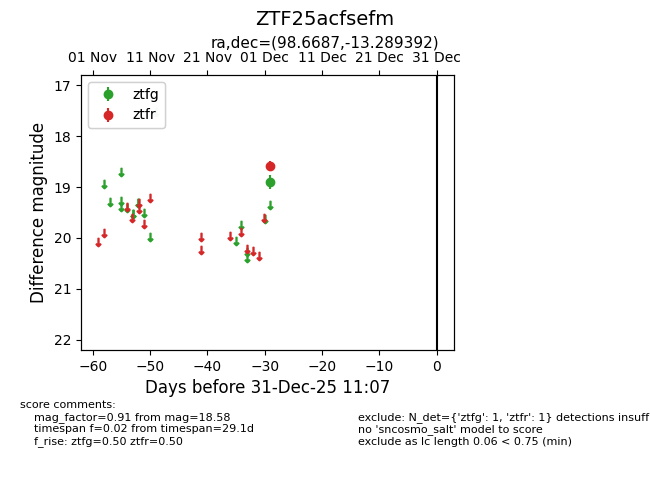
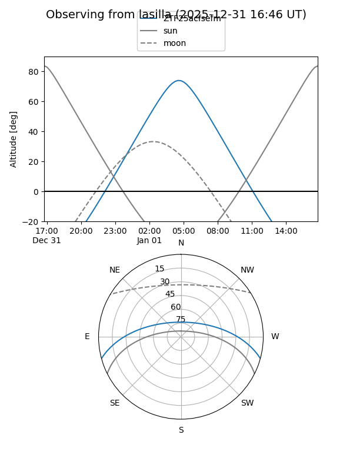
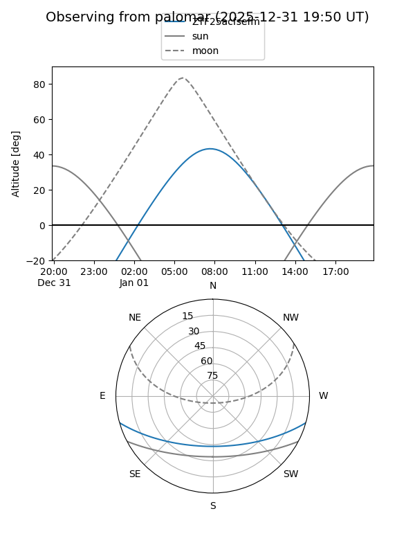

ZTF25acfsefm
Target ZTF25acfsefm at 2025-12-31 18:00
Aliases and brokers:
FINK: link
Lasair: link
ALeRCE: link
alt names
ZTF25acfsefm (ztf,fink_ztf)
Coordinates:
equatorial (ra, dec) = 98.6687,-13.28939
equatorial (HMS+DMS) = 06:34:40.48,-13:17:21.81
galactic (l, b) = (222.9894,-9.67818)
Flags:
Photometry:
last ztfg=18.91, ztfr=18.58
1 ztfg, 1 ztfr detections
Lightcurve

Visibility


Additional plots